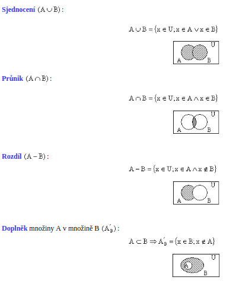

Výroky a množiny
Teorie a pojmy
Výrok je sdělění, o kterém můžeme rozhodnout, zda je či není pravdivé. Je-li výrok pravdivý přiřadíme mu 1. Pokuď je nepravdiv, přiřadíme 0. Výroky označujeme A, B, C,…, Z. Jednoduchý výrok využívá pouze jeden výrok. Složený výrok využívá více složených výroků pomocí logických spojek. Konjukce (A∩B) „zároveň“ – je pravdivý pokuď jsou oba výroky pravdivé. Disjukce(A∪B) „nebo“ - je pravdivý aspoň jeden výrok. Implikace(A→B)“jestliže“ - není pravdivý jen pokuď vyplívá z pravdy nepravda. Ekvivalence(A←→B)“právě tehdy, když“ - pravdivá pokuď mají oba výroky stejnou hodnotu. Negace výroku – si vymění za opačnou hodnotu výroku. A=1 negace je A=0. Kvantifikované výroky – jsou výroky, které udávají počet. Tautologie – na výstupu vycházi samé jedničky. Kontraindikace - na výstupu vycházejí samé nuly. Množina – soubor libovolných různých objektů, které mají vlastnost, podle které můžeme rozhodnout, zda do množiny patří či ne. Tyto objekty pak nazýváme prvky množiny. Určení množin – výčtem uvedených všech jejich prvků nebo užitím charakteristické vlastnosti.
• N - přirozená čísla: 1, 2, 3, 100, 105, 1006... ◦ můžeme je spočítat "na prstech ruky" • Z - celá čísla: -10, -1, 0, 1, 2, 3... ◦ zahrnují i záporná celá čísla • Q - racionální čísla: -10; -1; 0; 1/3; 5/2; 2,5; 3... ◦ číslo, které můžeme zapsat jako zlomek a/b (-1=-2/2; 5/2 = 2,5) • IQ - iracionální čísla: pí; e; odmocnina ze 2;... ◦ každé reálné číslo, které není racionální, tedy nelze zapsat jako zlomek a/b • R - reálná čísla: -10; -1; 0; 1/3; 5/2; 2,5; pí; e; odmocnina ze 2; 3... ◦ racionální a iracionální čísla • C - komplexní čísla -10; -1; 0; 1/3; 5/2; 2,5; pí; e; odmocnina ze 2; 3; 1+2i; 3-10i; 2i... ◦ reálná čísla + čísla s imaginární jednotkou i
Příklady
1) Rozhd